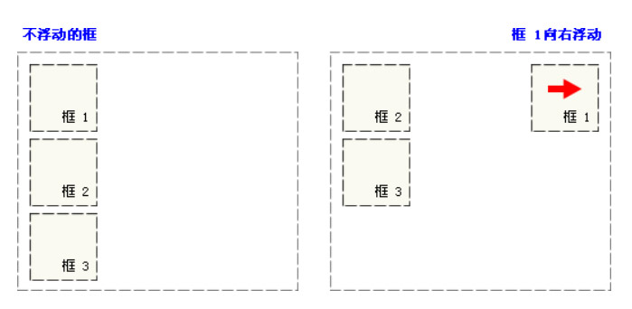
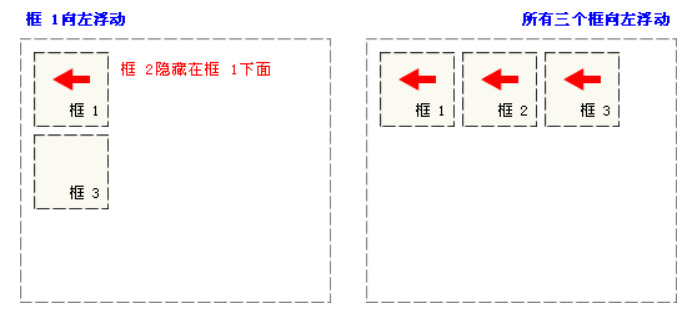

第三天
Css核心属性
一、CSS属性及属性值相关概念
属性：属性是指定选择符所具有的属性，它是css的核心，css2共有150多个属性
属性值：属性值包括法定属性值及常见的数值加单位，如25px，或颜色值#ccc等。
二、文本的相关属性
1）文本大小：{font-size:12px/14px/16px;}
说明：
1）属性值为数值型时，必须给属性值加单位，属性值为0时除外。
2）单位还可以是pt，9pt=12px;
3）为了减小系统间的字体显示差异，IE Netscape Mozilla的浏览器制作商于1999年召开会议，共同确定16px/ppi为标准字体大小默认值,即1em.默认情况下：1em=16px,0.75em=12px;1ppi=16px;
2）文本颜色：{color:颜色值;}
说明：
用十六进制表示颜色值：
0 1 2 3 4
5 6 7 8 9
0 1 2 3 4
5 6 7 8 9 A B C D E F
颜色模式：光色模式
R G B
FF 00 00
颜色值的缩写：
当表示三原色的三组数字同时相同时，可以缩写为三位;
当用十六进制表示颜色值时，需要在颜色值前加“#”
3）文本字体：{font-family:"字体1","字体2";}
说明：
*当字体是中文字体时需加引号；
*当英文字体中有空格时需加引号如“Times New Roman”；
4）加粗：{font-weight:bolder/bold/normal/100-900;}
说明：
1）在css规范中把字体的粗细分为9个等级，分别从100-900，其中100对应最轻的字体变形，而900对应最重的字体变形。
100-500常规字体
600-900加粗字体
5）检索或设置对象中的文本的大小写
{text-transform:none/capitalize/uppercase/lowercase}
6）字体风格：{font-style:normal常规字体/italic/oblique倾斜;}
说明：
1）italic和oblique都表示倾斜，不过oblique的幅度要大一点。但一般浏览器对它们的区分不是很明显。
7）水平对齐方式{text-align:left/right/center/justify（两端对齐中文不起作用）;}
8）垂直对齐方式{vertical-align:top/bottom/middle;}
9）行高{line-height:normal/数值;}
说明：
当单行文本的行高等于容器高时，可实现单行文本在容器中垂直方向居中对齐；
当单行文本的行高小于容器高时，可实现单行文本在容器中垂直中齐以上任意位置的定位；
当单行文本的行高大于容器高时，可实现单行文本在容器中垂直中齐以下任意位置的定位。（IE6及以下版本存在浏览器兼容问题）
10）文本修饰：text-decoration:none/underline/overline/line-through/blink
说明：
none:没有修饰
underline:添加下划线
overline:添加上划线
line-through:添加删除线
blink：闪烁
11）首行缩进：{text-indent:value;}
说明：
text-indent可以取负值；
text-indent属性只对第一行起作用。
12、字间距{letter-spacing:value;}控制英文字母或汉字的字距。
13、词间距{word-spacing:value;}控制英文单词词距。
三、列表的相关属性
定义列表符号样式：
1）list-style-type:disc(实心圆)/circle（空心圆）/square(实心方块 )none(去掉列表符号)；
2）使用图片作为列表符号：list-style-image:url(所使用图片的路径及全称);
3）定义列表符号位置：list-style-position:outside/inside;
关于列表属性的简写：list-style:;
四、边框的相关属性
1） 边框： border: 3px solid red;
2）边框线型：solid:实线，dashed:虚线，dotted:点状线，double:双线，none:没有边框
3）单独设置某个方向的边框属性：
border-top：上边框
border-bottom:下边框
border-left:左边框
border-right:右边框
五、背景的相关属性
1）背景颜色
语法：选择符{background-color:颜色值;}
2）背景图片的设置
语法：background-image:url(背景图片的路径及全称);
3）背景图片的显示原则
容器尺寸等于图片尺寸，背景图片正好显示在容器中;
容器尺寸大于图片尺寸，背景图片将默认平铺，直至铺满元素；
容器尺寸小于图片尺寸，只显示容器/元素/范围以内的背景图。
4）背景图片平铺属性
语法：选择符{background-repeat:no-repeat/repeat/repeat-x/repeat-y
}
no-repeat:不平铺
repeat：平铺
repeat-x：横向平铺
repeat-y ：纵向平铺
5）背景图片的位置
语法：选择符{background-position：水平方向属性值
垂直方向属性性;}
水平方向值：left/center/right或数值
垂直方向值： top/center/bottom或数值
6）背景图的固定
语法：选择符{background-attachment:scroll(滚动)/fixed(固定);}
7）各属性的缩写
语法：选择符{background：属性值1 属性值2 属性值3;}
六、浮动属性
语法：float:none/left/right;
注：浮动的框可以向左或向右移动，直到它的外边缘碰到包含框或另一个浮动框的边框为止。
浮动框是脱离了普通的文档流

